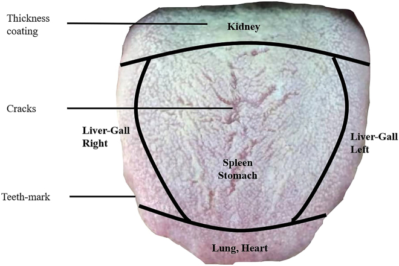
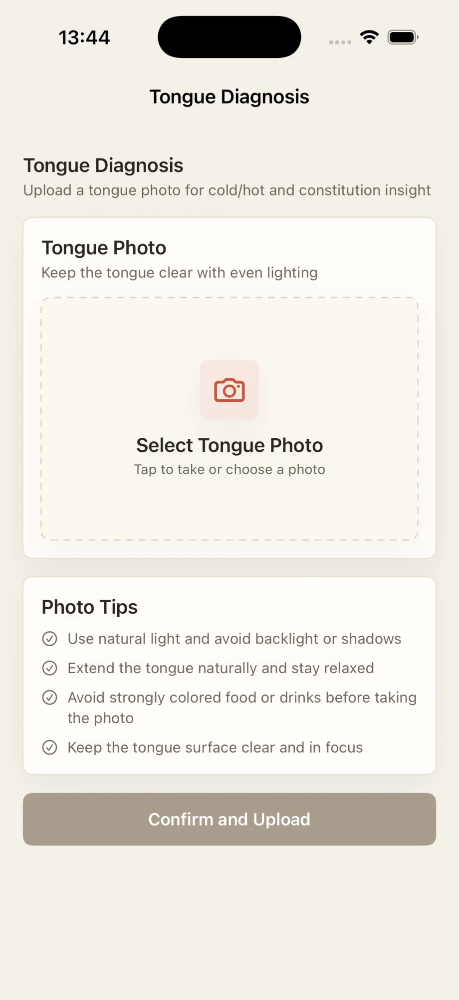
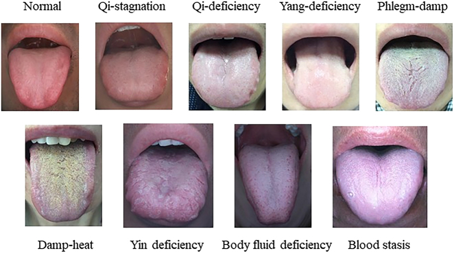

One tongue, several visual clues.
Shape, coating, marks, and regions add context.

Version 5.0 · Available now
ITONGUE · EVERYDAY WELLNESS
Upload a tongue photo for cold/hot tendency and TCM constitution information, then keep related records in one place.
TONGUE BASICS
Practitioners consider color, coating, moisture, shape, and tongue regions together—not as a diagnosis on their own.
FROM PHOTO TO INSIGHT
Upload once to see a cold/hot tendency and TCM constitution information.
Use even light and a sharp image.

Guided uploadSimple tips appear before analysisThe study shows nine example groups—not a self-diagnosis chart.

For wellness reference only—not medical diagnosis or treatment.
SAVED HISTORY
Tongue, face, and questionnaire records stay organized by type and date.
FREQUENTLY ASKED
A cold/hot tendency and TCM constitution information, saved as a wellness reference.
No. Results and prompts are for wellness reference only and should not replace medical advice, diagnosis, or treatment.
iPhone and iPad with iOS or iPadOS 17+. See the App Store listing and privacy policy.
ITONGUE · VERSION 5.0
Upload a tongue photo and keep your results together on iPhone or iPad.
View on the App Store